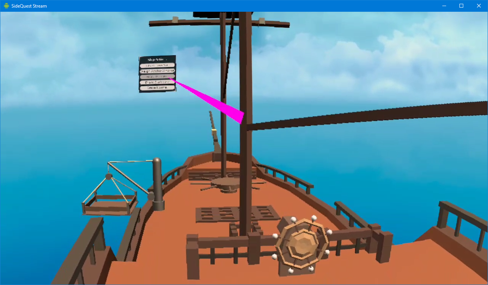
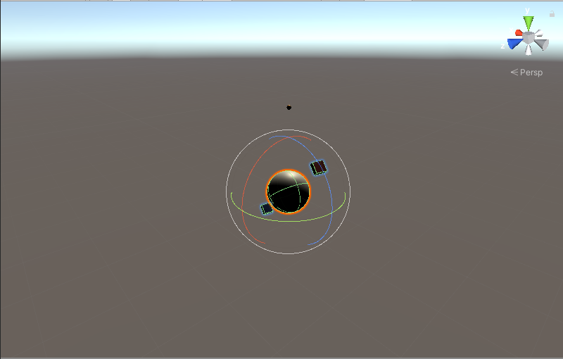

Interactions Galore
Interactions are a big part of our target demo experience. We have already tackled the interaction with the ship wheel for our MVP as well as the anchor last week. This week we continued to work on refining those interactions, as well as implementing the following new ones: raising/lowering sails, bracing sails, and the hoist system to move crates. We chose to implement these interactions through a UI menu rather than physically with ropes (at least for now) because we feel that the menu provides more convenient access. If time permits, we will consider making these interactions more physical, which should not take too much more work since we have the consequences implemented already.
We ran into a couple bugs, however, due to the purchased ship model having origins for individual parts not precisely in the center of each part. This led to issues in rotation for the bracing interaction, as well as bounding boxes being improperly located for the sails when adding a cloth component to them. We were able to fix the rotation issue by going back into the model in Maya and performing the union boolean on all the parts of the mast to make it one object with a central origin. Unfortunately we cannot do the same for the sails as the issue only arises when the cloth component is added. We tried to fix it using the ProBuilder tools, which allows us to center the pivots, however this required a MeshRenderer which conflicted with the SkinnedMeshRenderer which is necessary for the cloth component. We will continue to attempt to fix this bug going forward next week.
We also made progress on the hoist system, modeling our own custom asset for a simple hoist and platform. Our target for next week is modeling the crates to go along with this hoist and make animations for the hoist raising and lowering for the interaction.
Remodeling the World
Having gone back to the drawing board after discovering the limitations in place on the Unity Terrain Engine for optimization during runtime. We found some low poly models to replace the full tiled terrain. WIth the environment assets now consisting of polygon models, we can not only translate, but rotate the environment. While re-prototyping the world, we also discovered that the values used for rotation in the Unity inspector are misleading, they are not he float values stored in a rotation object, called a Quaternion, but a relation of two or more floating point values that create the rotational angle about an axis. This will require up to rethink a few of the core sailing mechanics to properly translate the sail trim, rudder position, and ship speed to values that correctly move the world in response.
Now that we have a world rotation mechanic we will have to deal with the view distance limit of the Oculus Quest to prevent pop-in or dynamic rendering of only part of the landscape as it comes into view. We have an idea or using a fog or a mirage effect. The end goal being that landscapes look as if they are coming over the horizon.
Destination: Interesting
Most of the work has been focused on the ship assets and the backend for multiplayer interactions and sailing mechanics. With these components becoming more robust we can turn our attention to the aesthetics of the environment. Currently we want to have a few destination types, an island resort and a harbor to start. These are going to be caricatures, meaning low modeling detail with focus on features that make them simple to identify, but still add to the overall appeal of the environment.
Sailing in Sound
Now is a great time to add another dimension to our experience: audio. We found sounds for the water, wind, sails, ship, and more that we can add to Hands on Deck. A tutorial showed us how to create an Audio Manager script that we can use to keep all of our sound components under one GameObject, simplifying adding, removing, and replacing sound effects. Some adjustments to the script allow us to make any GameObject a source so that we can implement 3D spatial audio. In addition, we are looking into adding voice chat through Photon Voice 2, the same service we use for multiplayer, so that users of the app won’t have to rely on a third party app for communication. We have run into some difficulties with finding tutorials and thorough documentation, so some discovery is in order. All in all, we’re hoping this new element to Hands on Deck will greatly enhance the experience.
- Work Log -
James: Reworked world modeling component and worked on ship sailing mechanics. Collected assets for low poly environments to replace use of Unity terrain objects.
Patrick: Finished moving progress onto new ship model. Implemented raise/lower sail, brace sail interactions, and modeled a hoist system for the cargo transportation idea.
Abhinav: Found sound effects, created Audio Manager, started adding voice chat with Photon Voice 2.
Julian: Adjusting ship mechanics for the new ship, such as the ship’s wheel. Made tweaks to network scripts for better network performance. Still looking into adjusting player positions across the network.
- Work Plan -
James: Add center of mass calculations to world model for increased boat drift. Build at least 3 points of interest destinations. Layout basic gameplay mechanics and improve VR avatar.
Patrick: Fix cloth bug on new ship sails. Model crates, make animations for hoist interaction.
Abhinav: Finish and test Photon voice chat, help with adding interactions and UI elements to ship.
Julian: Continue optimizing network interactions, look into and hopefully solve slow network updates on world transformation (make it mostly client side, doing rpc call on player join to tell the server to send their world information to new players). Continue bug fixing for incorrect player position across the network. Assist with adding interactions and UI elements.